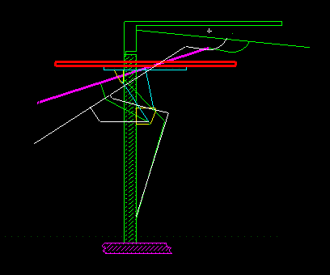

Technical Marketing MS5 Vignettes - VGx Garage Door
This VGx example show s how the user can use the VGx tools and quickly
and easily create 2d mechanism stick diagrams. These can then be exercised by
dragging geometry of dimensions.
Model file :- VGx_vignettes.mf*
Begin vignette
Get the Garage Door assembly to the workbench.

Drag the Left end of the Magenta line to exercise the door mechanism.